The house at a glance
| List price | $1,295,000 |
| Beds / baths | 3 / 2.5 (primary on main, 2 bedrooms lower) |
| Finished area | 3,209 sf (1,836 main + 1,393 lower) + ~500 sf storage |
| Lot | 5.13 acres; west line adjoins state forest |
| Garage | 40×50 attached, heated, 10×8 / 12×12 / 10×8 doors, 10 ft walls rising to about 13′8″ in the flat center |
| Built | 2024, 2×6 frame, poured/insulated-panel full basement |
| Heat / utilities | Propane forced air + central air, gas fireplace, Cherryland Electric, well + septic |
| Extras | Covered back deck (~31×11) with hot tub, fenced yard, shed, coffered ceilings, hinged-bookcase speakeasy |
Open the 3D explorerProperty fly-overDownload PDFFurnishings Exhibit A (PDF)Backup power & garage
Main floor = piano lounge
Steinway B as the focal point of the 21′4″ × 18′9″ great room, lid opening toward the fireplace; two black leather cigar chairs and the tufted bench at the hearth; the carved mirror panel over the mantel.
Lower level = movie, speakeasy, two bedrooms + office
Big sectional in the family-room corner facing the 75″ TV and a square coffee table, massage chair in the same room. Behind the hinged bookcase: a speakeasy with dark walnut paneling, a square 4′6″ high-top table for 4 in the same dark brown stain with matching chairs, and a brass bar cart. Bedroom 2 (kids’ room) and Bedroom 3 (teen room, later guest) are furnished. The glass desk and Aeron move to an office in the storage / utility room.
Garage = CrossFit box + one lift + mini office
Gym of about 670 sf with the 8×8 platform and rig under the 13 ft center, a stretch / bodyweight / TV corner at the back left, cold plunge, and a mini office of about 99 sf with a new standing desk at the rear south window. The existing gray workbench and cabinet run stays; the movable gray steel shelving goes to basement storage. The Airstream stays in the 12×12. One 4-post lift in the right bay (Model Y under, 911 on top), the XT5 parks in the left bay, and the Wall Connector is on the front wall of the right bay. The stair walkway stays clear.
Off the deck = portable 8×13 skid sauna
A portable wood-fired sauna on skids, styled like the rear shed (gray lap siding, white trim, black windows, single-slope roof). You step off the deck by the hot tub into a small changing room, then through a glass door into the hot room, where two people can lie flat on 7 ft benches. The stove and chimney are at the far / yard end. Plans and details.
Concept photos: every room, restyled
Each listing photo reworked as a concept: the rooms restyled with our furniture, plus the garage, sauna and yard concepts. Tap or click any photo to open the full-size image in a new tab, where you can pinch-zoom and share its link.
AI-assisted edits of the actual listing photos, made to show the feel. Placement follows the to-scale plans, but sizes in an edited photo are approximate; the plans and the dimensioned drawings are the source of truth.
Exterior and the lot


Deck and backyard


Main living


Kitchen and dining
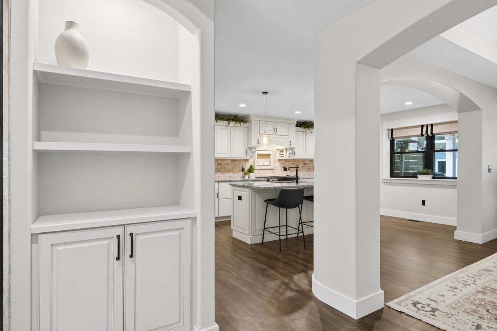


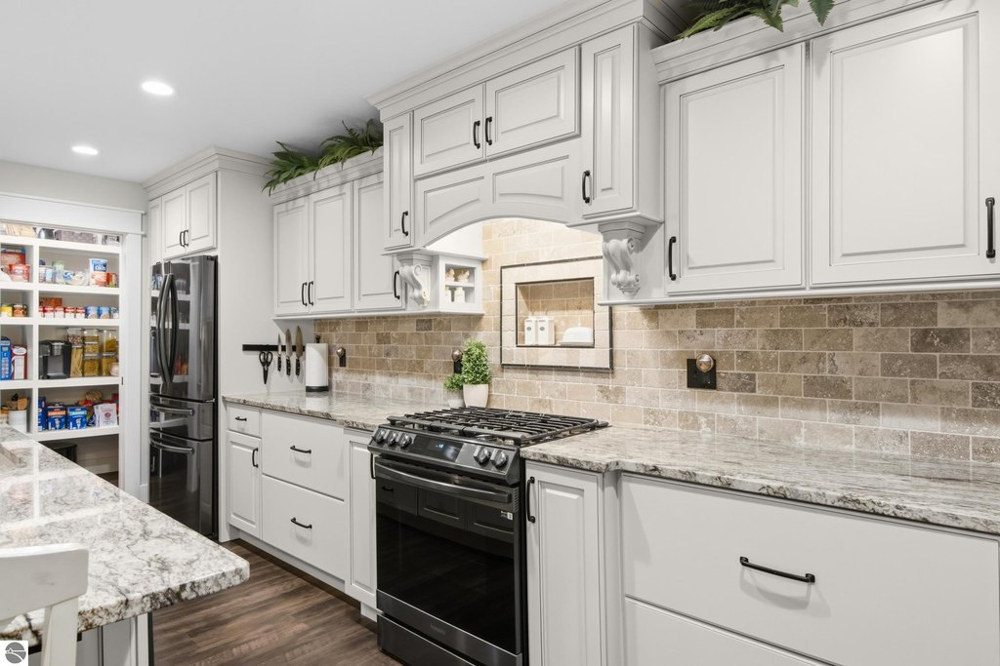


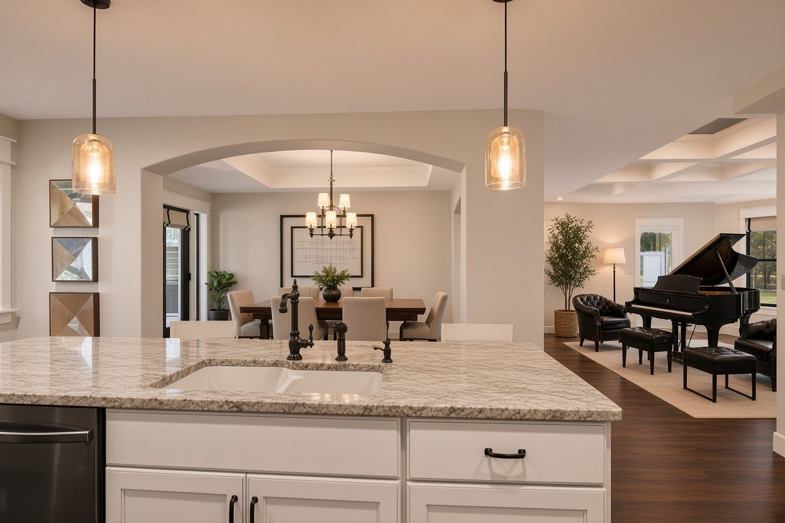


Mudroom, powder, laundry


Primary suite


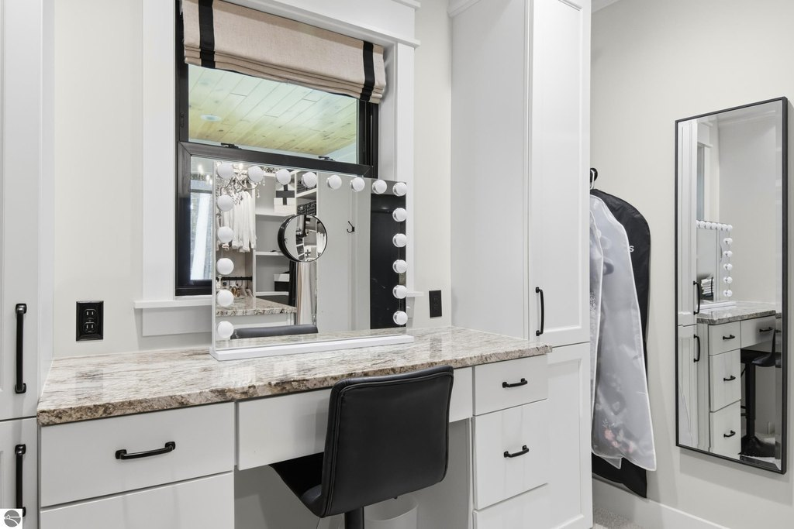

Lower level

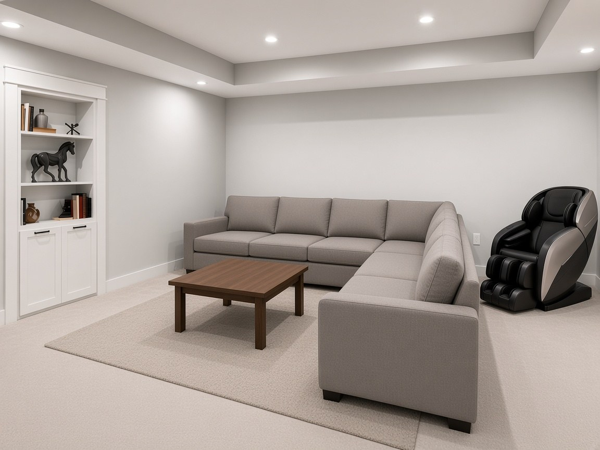


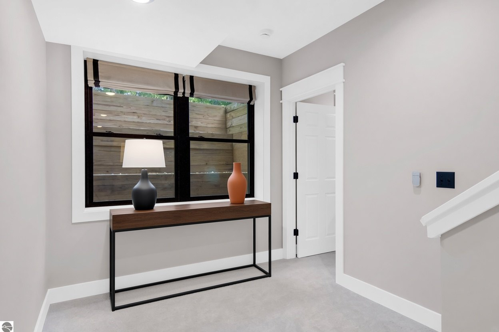


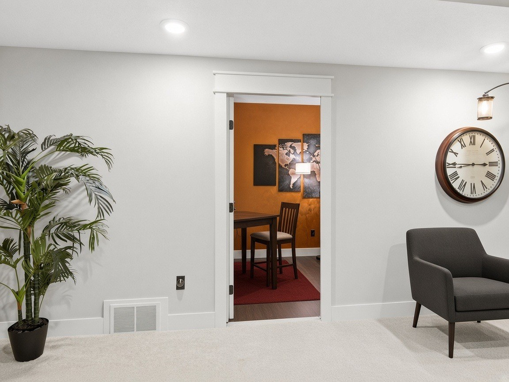


Garage


Reconstructed floor plans (to scale, furnished)
Walls, doors and windows are traced from the house’s permit drawings (¼″ = 1′) and checked against the listing’s room sizes; typical accuracy is about ±6 in. The finished lower level follows the listing floor plan, since it was finished differently from the original drawings. Items marked “measure” use typical sizes until we tape them.
Updated Nov 22, 2026 with room assignments and furniture from the walkthrough notes and the leave-behind list. Pieces marked approx. are existing furniture or typical sizes, not yet measured. Bedroom orientation follows the listing floor plan: walking down the main stair, Bedroom 2 (13′9″ × 13′6″, next to the bath) is on the left and Bedroom 3 (17′11″ × 10′5″ rectangle) is on the right. Both still need to be confirmed against the walkthrough videos. A second pass will follow once those videos sync.


Builder’s plans
The original drawings provided by the builder, which are the source for the reconstructed plans and the 3D model. In these copies, names and job numbers are blacked out; all dimensions are unchanged. Click a sheet to open the full-size PDF.


Cross-check against sheet A4 (Nov 22, 2026)
- Consistent: overall 94′ and house 54′ × 34′. Kitchen 13′-5″, dining 10′-11″, walk-in closet 9′-11″ and primary 17′-1″ widths match the plan and model. Back-wall, front-wall and east-wall window and door positions match. The garage door widths and spacing (2′-2¾″ / 10′ / 2′ / 12′ / 2′ / 10′) match, and so do the garage stair position and the house door into the mud room.
- Fixed: the garage is 50′-0″ outside, about 49′-1″ inside, not 49′-11″. The garage plan now pulls the loft, office and rear storage forward to match, and the platform and rig sit just clear of the loft edge.
- Fixed: in the 3D model, the two 36×48 south-wall windows and the 36″ man door were about 7–10 ft too far toward the back. They now sit where sheet A4 shows them. The 42″ back door now sits at the top of the garage stair, against the house wall. The garage plan’s windows were nudged to match, and the battery wall and stretch-area rack were shifted so they stay clear of the windows.
- Note: the kitchen label uses the listing size (14′10″). Sheet A4 dimensions the kitchen at 13′-5″ wide, the size used in the plan.
3D model
An interactive 3D explorer, scaled from the Cubicasa floor plan. Orbit, pan and zoom like Blender, or fly with WASD. It has saved camera views, layer toggles, a section cut, a measure tool and a click-for-info card. It also covers the garage layout from the fit plan, the shed and the skid sauna. Zoom out for a fly-over of the lot on aerial imagery and LiDAR terrain, with the parcel lines and the trail connectors to the VASA system. Open it full-screen, take the fly-over tour, or use the classic model.
Photo concepts, in short
All 66 concept photos are in Concept photos. A few sauna concepts are there too. The concepts use our own pieces — Steinway B and cigar chairs, the gray sectional and massage chair, the glass desk and Aeron in the office, the speakeasy behind the bookcase, the kids’ room, the gym and office, the wood-fired sauna — not the sellers’ furniture.
What fits, and what’s tight
Fits well
- Steinway B (6′11″ × 4′10″): keys toward the kitchen, tail toward the front windows, lid opening west toward the fireplace lounge. 3′5″ to the lounge, 4′1″ to the stair rail, 5′7″ from the tail to the windows.
- Cigar chairs + tufted bench face each other across the hearth, about 2½ ft off the fireplace.
- Speakeasy (9′2″ × 13′6″) behind the hinged bookcase: dark walnut paneling, amber sconces and a low brass pendant; a square 4′6″ × 4′6″ bar-height table in the same dark brown stain with 4 matching high-back chairs in the middle (about 2 ft from the table edge to each side wall), and a 36″ × 18″ brass bar cart on the far wall (about 3′8″ from the table). The bookcase swing (about 3 ft) stays clear by about 7″.
- Secondary office in basement storage: the glass desk + Aeron in a room-within-a-room made from freestanding IKEA-style walls, with every mechanical system left open to reach. Plan and photos.
- Bedroom 2 (kids’ room, 13′9″ × 13′6″): full bed on the north wall, nightstand, kids desk, 6-drawer dresser.
- Bedroom 3 (teen room, later guest, 17′11″ × 10′5″): sleigh bed, nightstand, dresser, small desk.
- Primary: king bed on the back wall between nightstands, two tall chests. Dining: table with 6 chairs. Kitchen: 4 counter stools and a buffet by the pantry.
- TV, console, soundbar, sub on the existing family-room TV wall (outlet and cable are already there).
- One BendPak HD-9XW-class lift (high-rise, 9,000 lb) in the right bay: Model Y under, 911 Carrera 4S on top at about a 72 in lock. The lift sits behind the 8-ft door panel line (about 10.5 ft in), so a car on top clears the open door. The XT5 parks in the left bay without a lift, which frees the left wall for the backup-power equipment.
Tight / check
- Sectional size is unmeasured. The corner spot fits a ~138″ × 86″ L with a 65″ chaise; the short leg must stop ~1 ft before the hinged bookcase so the secret door still works.
- TV distance: ~15 ft from the back seats (~12 ft from the chaise) to a 75″ screen. If that feels far, float the sectional ~3 ft off the back wall with a sofa table, or go 85″.
- Massage chair needs ~6½ ft when reclined; it sits on the angle by the bath wall.
- Piano and sun: keep the tail 5+ ft from the front windows (as shown), use UV film or shades, and add a humidity system (Dampp-Chaser).
- Do not raise the lift to the top lock until the ceiling is taped. Confirm the exact drive-under with BendPak and the post spacing against the stair landing (about 0–0.5 ft of margin).
- Door tracks: the side doors’ open panels sit at about 8′6″–9′, so the stacked lift stays behind about 10.5 ft from the door. The 12×12 center door is high-lift. Confirm with the installer.
- High rings and rope: the trusses are not designed for these loads as built. Get a written letter from the truss maker or an engineer before hanging anything. Never drill, notch or hang from a truss chord or web. The rope tops out at about 12′4″–12′6″.
Still to confirm
- Existing pieces left with the house are placed at approximate sizes until they are measured.
- Primary bed wall, Bedroom 2 / 3 orientation and the speakeasy layout are checked against the walkthrough videos in the second pass.
Move-in routes for the piano and sectional
Piano
Easiest through the 6 ft rear French doors in the dining room off the covered deck, then about 15 ft to its spot. Second choice is the 36″ front door with the sidelight; a piano mover takes it in on its side on a board either way. No stairs inside.
Sectional, route A: main stair
Straight run, 15 risers, ~4′1″ framed width (~3′5″–3′8″ clear), landing in an 8′3″ hall with room to turn, then open into the family room. Best route, but a stair lift shows on this stair in the listing photos; if it stays, its rail costs about a foot of width. Also check the headroom where the stair passes under the main floor.
Sectional, route B: garage stair
From the right side of the garage: a straight 14-riser stair in a 3′11″ hall, then a 90° turn through a ~36″ door at the bottom into the storage room, then a 36″ door into the family room. No finished floors to protect, but the bottom turn is the pinch point: pieces deeper than ~34″ or longer than the landing ceiling may not pivot. Measure before moving day.
Home systems: where they are and their history
From the Nov 22, 2026 home inspection, with photos. The house was built in 2023–24, and the inspector found it dry, structurally sound and very well maintained. This is a reference for where things are and how to look after them. Ages are the inspector’s estimates; radon and well-water lab results are still to come.
| System | What and when | Where | Upkeep |
|---|---|---|---|
| House | Custom stick-built, 2023–24; vinyl siding, precast insulated foundation | — | — |
| Roof | Asphalt shingles, one layer, about 2023; leaf guards on seamless gutters, underground downspout drains | — | Check leaf guards yearly |
| Windows | Insulated vinyl double-hung tilt-ins, dated Feb 2023 | — | — |
| Furnace + A/C | Bryant propane high-efficiency furnace, split A/C, humidifier, about 2023; final mechanical inspection 2024 | Basement utility room; condenser outside | Filter every 2–3 months (log on the furnace); A/C service in spring |
| Water heater | Lochinvar 75 gal propane tank, about 2023 | Basement utility room | Flush yearly; keep at 120 °F |
| Propane | 500 gal tank | Yard | Auto-fill or watch the gauge |
| Well | 5 in PVC casing, submersible pump, 4–5 gpm | Front yard east of the house; pressure tank and main shut-off in the basement | Test water yearly |
| Septic | Two-compartment precast tank with riser lids, drain field; installed 2023 | West backyard | Pump every 3–5 years |
| Plumbing | PEX and copper supply, PVC drains; ejector pump for the lower bath; final plumbing inspection 2024 | Basement | — |
| Electric | 200 A underground service, breakers; final electrical inspection 2024 | — | — |
| Radon | Sub-slab mitigation system, fan in the attic, fall 2026 | Pipe from the basement floor to the attic and roof | Check the gauge; fan runs continuously |
| Insulation | House attic: ~12 in blown fiberglass over closed-cell foam; foam rim joists; garage attic blown-in only | Attic access in the garage ceiling | — |
| Garage | ~40×50, three doors with auto-reverse openers, ceiling propane heater | — | — |
| Gas fireplace | Sealed, electronic ignition, remote | Living room | Yearly service |
| Irrigation, hot tub, softener | Not evaluated at the inspection | Irrigation valves inside; backflow outside | Winterize irrigation each fall |
Water and septic

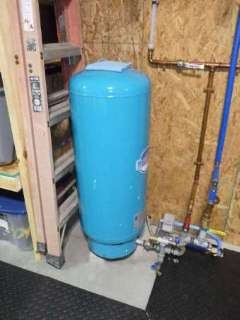
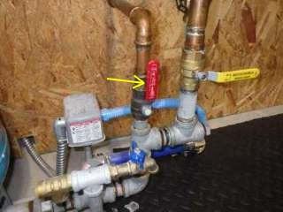
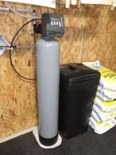


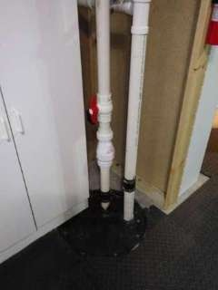
Heating, cooling and hot water
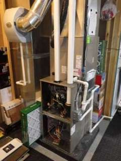
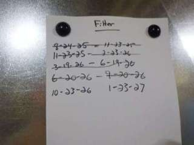

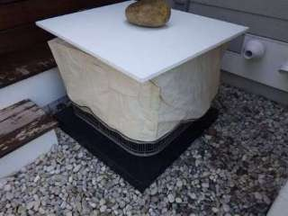
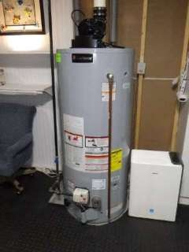
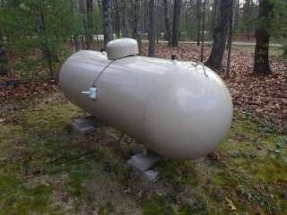

Air, structure and outdoors

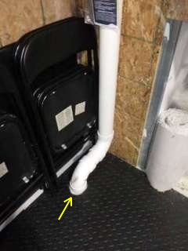
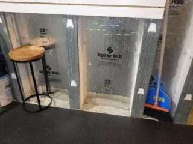


Garage: CrossFit gym, one lift, mini office at the south window (v3)
Updated Nov 23, 2026. The 40×50 heated garage has 10 ft walls rising to a flat center of about 13 ft over the 12×12 door, with about 11–12 ft at the side-bay centerlines, and a storage loft over the center of the back wall only (about 12–27 ft from the south wall, per the listing photos), with about 8 ft clear under it; the loft and its boxed posts are fixed. The back-left gray workbench and cabinet run stays. All the gray steel shelving is movable and goes to basement storage, and the sellers’ tire rack leaves, which frees the back-right spot. The gym is about 670 sf. The 8×8 lifting platform, our own black Xebex-style rack, set up as a 4-post rig with pull-up bars and a 10 ft wall-ball target, and the high rings and climbing rope sit in the 13 ft zone. The cold plunge and a GHD / reverse hyper sit beside it. Cardio (curved treadmill, rower / SkiErg) runs along the left bay. Under the fixed loft only low racks: dumbbells and kettlebells, plates, the bar tree and plyo boxes; the bench and hip-thrust station take the old tire-rack spot. The 4.3 ft walk to the house door and stair stays clear.
Stretch / bodyweight / TV area (shared): open floor in the far back-left corner, beside the existing gray workbench and cabinets, with no loft over it (about 10–12 ft). A wall rack holds rollers, bands, mats and light dumbbells, the TV hangs on the south wall, and the back of the office wall is the handstand wall. Mini office: about 10 × 9′8″ (≈99 sf) framed in front of the rear south-facing window, with a new standing desk facing the window for daylight; own insulated lid at about 7′3″ and a glass-lite door on the gym side. Cars: one 4-post lift in the right bay behind the door panels, Model Y under and 911 on top. The XT5 parks in the left bay without a lift, and the Airstream stays in the 12×12. A Tesla Wall Connector is planned on the front wall pier of the right bay. Backup power: three FranklinWH batteries and the aGate on the left wall, with 36 in kept clear; a starter solar array fills the garage south roof, and an outdoor 240V inlet takes a portable dual-fuel generator. Final layout with the installer. Heat and light: the existing gas unit heater and the existing garage lighting stay; nothing added. Cold plunge: plugs into a regular 120V / 15A outlet.
High rings and climbing rope (concept, Nov 23): the look is a visible wood or steel mounting bar across the 13 ft ceiling, with the gymnastic rings (straps about 20 in apart, over the 8×8 platform) and a 1.5 in manila climbing rope (with a swivel, over a crash mat) hanging from it. The garage roof is trussed at about 24 in on center, and the attic hatch is at the center of the garage, so the support is built from above: a long engineered beam (a strongback) laid across several trusses in the attic and tied in with structural screws, blocking and bracing, then through-bolted to the visible bar below. Spreading the load this way means no single truss carries a swinging athlete. It is sized for two people at once (one on the rings, one on the rope) with a large dynamic and safety margin. Nothing gets installed without a written letter from the truss manufacturer or an engineer. If they say no, the fallback is a taller freestanding frame bolted to the slab. The rig and the bar stay clear of the fixed loft edge.
Fit check at true size (Nov 23)
Published vehicle and lift sizes on the 39′6″ × 49′11″ interior (Cubicasa plan), with the XT5, the Model Y under the lift, the 911 on top and the Airstream (planned at 25 ft) all parked. Estimates from the to-scale plan; tape on site.
Which side is the workbench? Standing at the garage doors looking in: the fixed gray workbench and cabinet run is at the rear LEFT (back wall, south half, left of the loft), and the sellers’ tire rack (leaving) is at the rear right under the loft, per listing photos 55–57. The house door is on the right wall and the battery wall is on the left (south) wall.
Verdict: on the true 39′6″ × 49′11″ floor (10 ft walls rising to a 13 ft flat center) everything fits, with 36″ or more along every vehicle side and in front of the batteries. What doesn’t meet 36″: the vehicle fronts sit 9–12″ off the closed doors, the Airstream’s rear is about 34″ from the platform edge, the Model Y has about 8″ each side between the lift posts, and the ring swing comes within about 27″ of the lift posts. Already moved out: all gray steel shelving, the futon and the bikes (to basement storage).
| Check | Clearance | Verdict |
|---|---|---|
| XT5 (15′11″ × 6′2″) through the 10 ft left door | ~2′3″ left, ~9″ right at the mirrors | OK |
| XT5 driver door to the battery wall (aPower / aGate fronts) | ~42″ / ~45″; the 36″ working space stays clear (bollards only at the ends of the run) | OK |
| XT5 to the Airstream | ~72″ | Comfortable |
| XT5 rear to the rower / treadmill | ~38″ | OK |
| Airstream (planned at 25′ × 6′7″, 9′9″ tall) in the 12×12 door | ~2′8″ each side of the door opening, ~2′3″ headroom; nose ~9″ off the closed door | OK, snug at the front |
| Airstream sliding door side to the lift posts | ~44″ | OK |
| Airstream rear to the lifting-platform edge | ~34″ (the platform is walk-on floor; ~10′ to the rig) | Tight: 2″ short of 36″ at the platform edge |
| Lift posts to the house-side wall (walk to the house door and stair) | ~40″ (lift moved 1 ft toward the house) | OK |
| Model Y between the lift posts | ~8″ each side with mirrors out | Tight: center the car, fold the mirrors |
| Model Y doors: driver side / passenger side | ~62″ to the Airstream / ~58″ to the wall | Comfortable |
| Model Y (63.9″) under the raised runways; 911 roof vs ceiling | ~8–9″; ~10′9″ vs ~11′11″ (~14″) | OK |
| Vehicle fronts to the closed garage doors | ~9–12″ | No 36″ walkway across the fronts: walk around by the sides and rear |
| Aisle behind the lift (to the cold plunge) | ~78″ | Comfortable |
| Barbell path on the platform to the treadmill | ~32″ | OK |
| Ring swing (side to side) to the lift posts | ~27″ | Tight: swing side to side only, rings and rope one at a time |
| Rear lift post at the stair-end closet corner | post sits at the closet’s front corner | Check the closet door position on site |
| Mini office door / house door | office door swings into the office; house door assumed to swing into the house | Verify the house door swing |
| Open floor under the fixed loft (~8 ft clear) | ~6 ft deep, low racks only | OK; nothing tall under the loft |
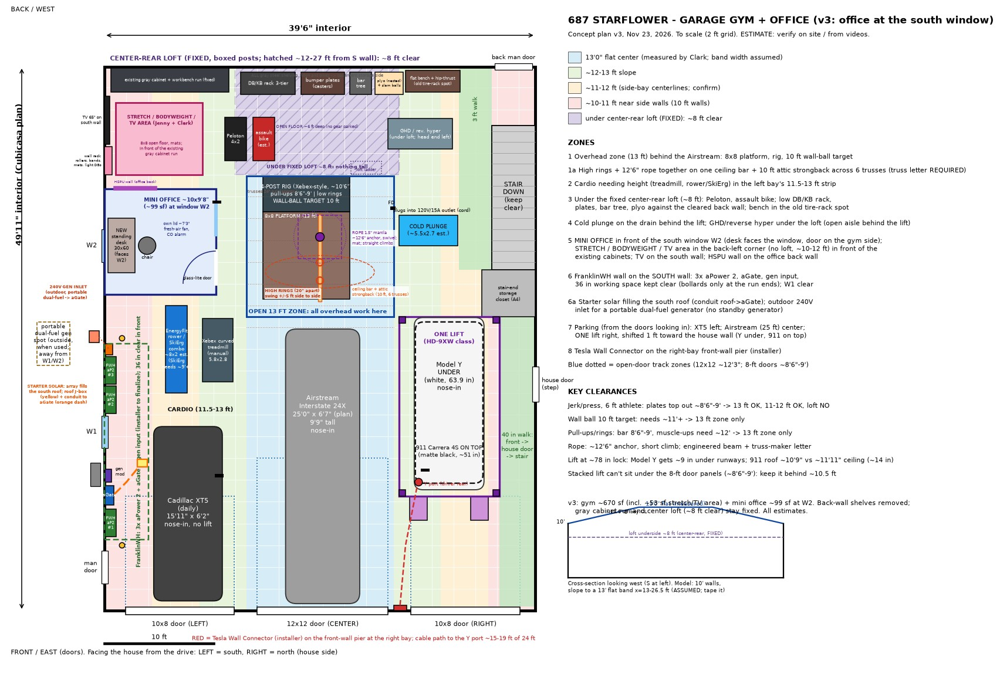
Photo concepts, redone Nov 23 to match the v3 plan and the real garage (gray workbench run kept, steel shelving moved out). These are AI concepts for the look; use the plan above for exact positions and sizes.
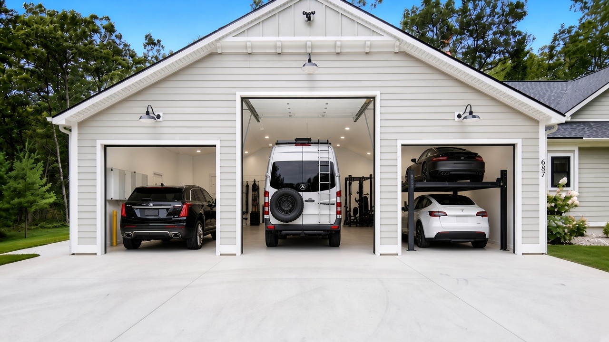


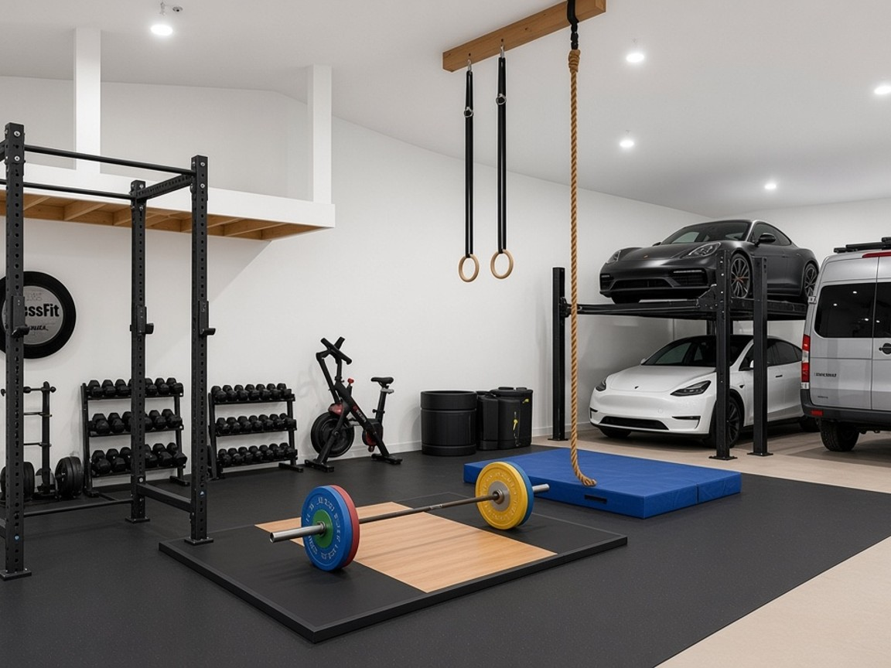
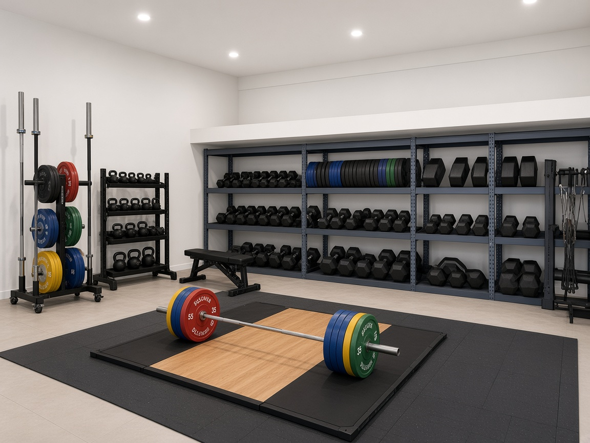
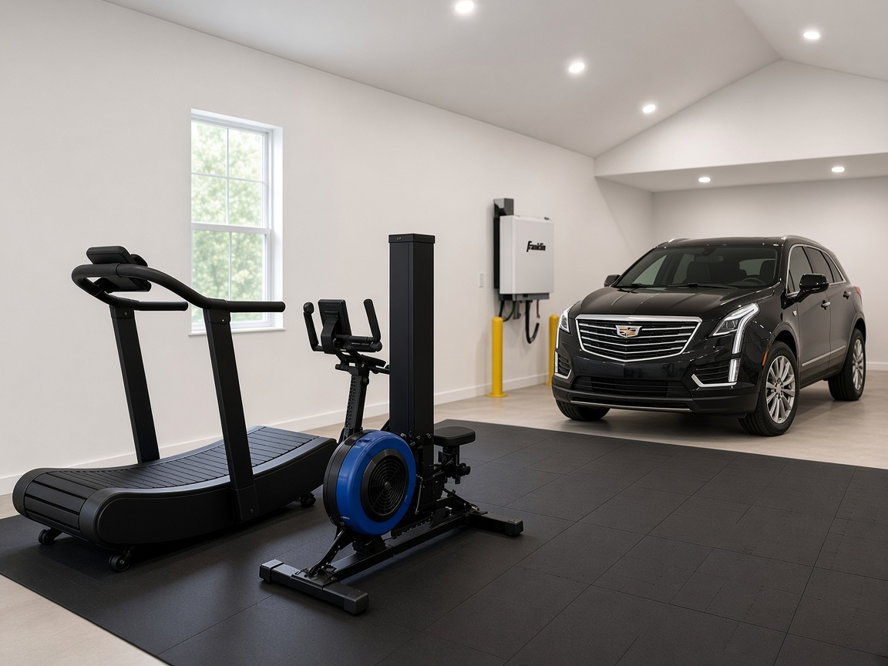
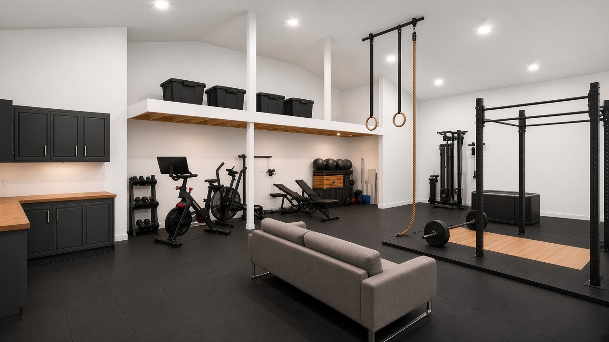
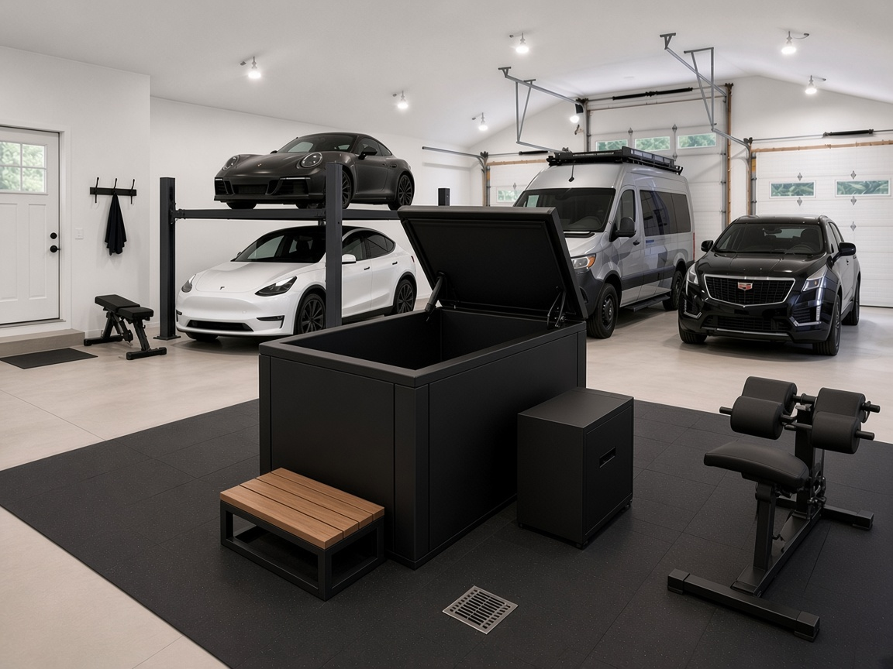
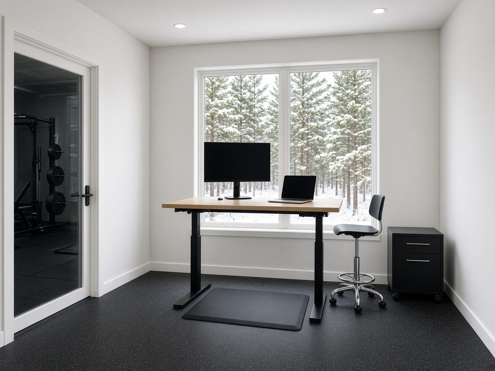
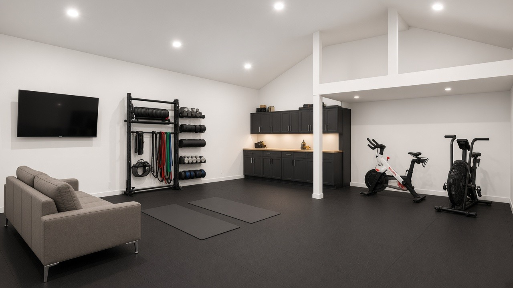
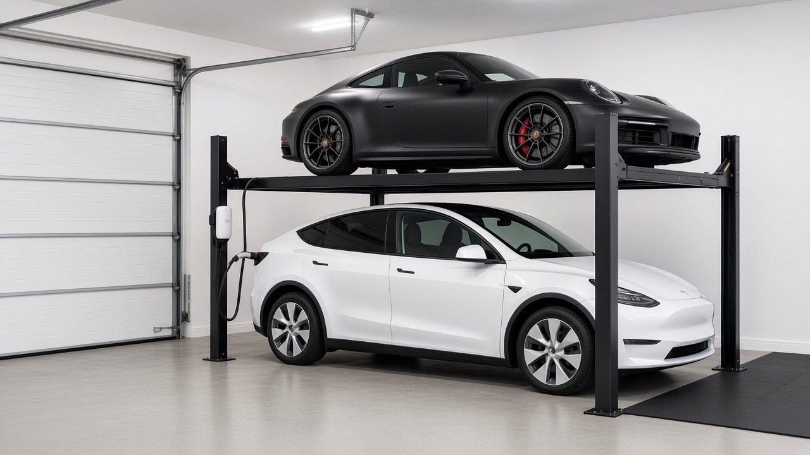
Equipment: what we already own, and Rogue to fill the gaps
Our own equipment, coming north
- Black Xebex-style power rack with attachments, rebuilt as the 4-post rig
- Three barbells (two chrome, one black) on the vertical bar tree
- Colored bumper plate set and the rolling plate / bar rack
- Hex dumbbells and kettlebells, and the black 3-tier dumbbell / kettlebell rack
- Xebex curved manual treadmill
- Peloton bike with screen
- EnergyFit rower / SkiErg combo
- Strongweight hip-thrust bench and a flat bench
- Xebex 3-in-1 plyo box and step boxes
- Medicine / slam balls, battle rope, bands, rollers
- Cold plunge tub, rubber mats, and the bicycles and eBike (bikes stored in basement storage)
Rogue fill-ins (links checked Nov 23, 2026)
- Rings: Rogue wood gymnastic rings and a Rogue ring hanger
- Rope: Rogue climbing ropes (15 ft × 1.5 in manila is plenty here)
- Landing: Rogue crash mat under the rope
- Platform: Rogue 8×8 Olympic platform
- Floor: Rogue ¾ in gym mats for the rest of the gym floor
- GHD: Rogue Echo GHD, or the Rogue Donkey (GHD + reverse hyper)
- Air bike: Rogue Echo Bike
- Wall balls: double wall-ball target on the rig and Rogue medicine balls
- More iron if needed: Rogue rubber hex dumbbells to fill missing pairs, HG 2.0 bumpers, HG 2.0 collars, a vertical plate tree
- If our current rack won’t convert to a freestanding 4-post: Rogue RM-390F Flat Foot Monster Rack 2.0 or the RML-490 power rack
The FranklinWH batteries, the starter solar array, the portable-generator inlet, the Wall Connector, solar-ready steps and the garage-roof sun analysis are on a separate page: Backup power & garage.
Garage mini office: standing desk at the south window
Updated Nov 23, 2026. The office sits on the south wall, in front of the rear (southwest) window, not tucked into the corner: about 10 × 9′8″ (≈99 sf) with a new standing desk facing the window, a stool, and a small file cabinet. The stretch / TV corner and the existing gray workbench run share the back-left corner. The glass desk and Aeron move down to the new secondary office in basement storage.

Build-out
- Walls: 2×4 with mineral-wool batts and 5/8″ drywall. The gym-facing wall is doubled for sound.
- Lid: its own insulated drywall ceiling at about 7′3″, which can double as a small storage deck.
- Light: the south window and the existing garage lighting, plus a glass-lite door; nothing new added.
- Comfort: the existing garage heater, a small fresh-air fan, and a CO alarm (required in a closed garage room).
- Access: the door opens toward the gym; about 4 ft to the platform edge.
To check on site
- Tape the loft depth (assumed ~10 ft) and its clear height (~8 ft).
- Tape the rear south window position and the depth of the gray workbench run.
- Confirm the layout against the garage walkthrough videos.
Basement storage: finished, with a secondary office inside
The 31′7″ × 18′11″ unfinished storage / utility room becomes three zones without boxing in any mechanicals: a secondary office in the middle of the room along the outside wall (the glass desk and Aeron, printer stand, bookcase, cabinet and chest), a storage zone for the gray steel shelving from the garage, the bikes and bins, and a mechanical zone at the family-room end (furnace / air handler, water heater, well pressure tank, softener and brine tank) that stays open with clear service space in front of every unit. The office is a room within the room, like the office in the garage gym, built from freestanding furniture instead of new walls.

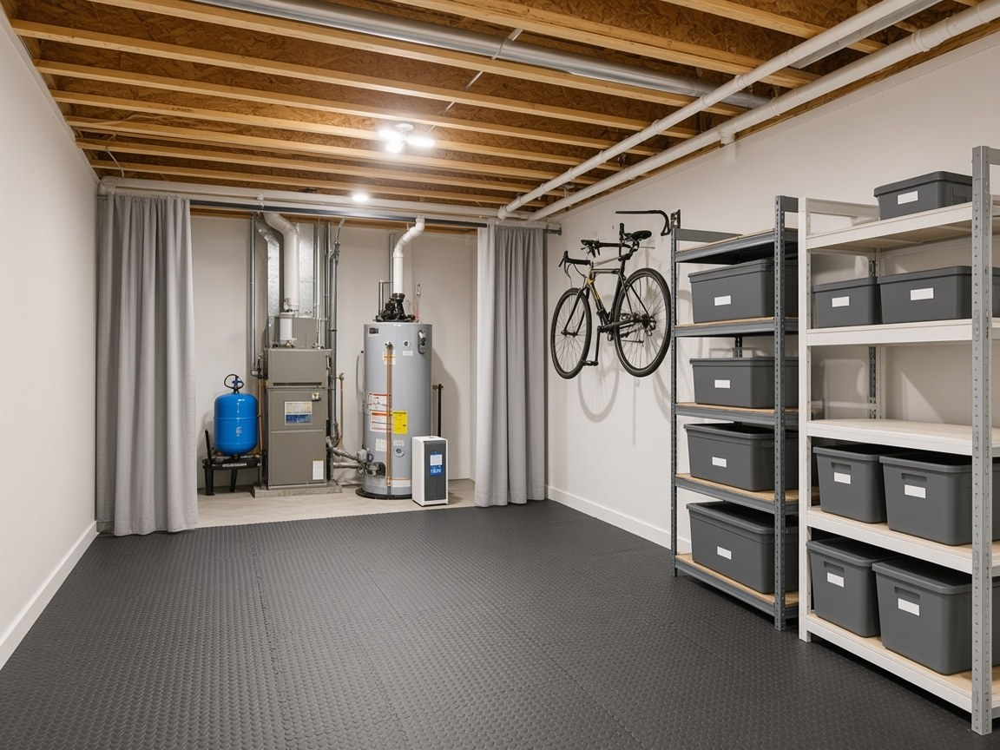
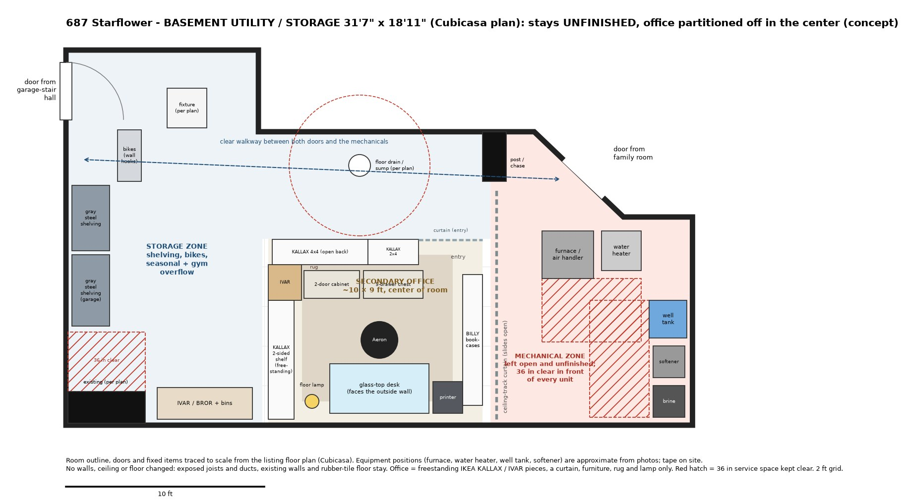
Finish what can be finished
- Walls: drywall the framed perimeter walls in the office and storage zones (insulated, painted warm white). Leave the walls behind the mechanicals open or covered with screwed-on removable panels.
- Ceiling: paint the open joists, ducts and pipes one color instead of drywalling them, so every valve, cleanout, junction box and duct stays reachable and the room still looks finished.
- Floor: keep the rubber tiles; add a large rug in the office.
- Light: existing fixtures, plus a floor lamp and a desk lamp in the office.
Freestanding walls, IKEA-style
- Office back wall: a run of PAX wardrobes facing the storage side, with the backs finished in slat panels toward the office.
- Office side divider: a double-sided KALLAX shelf wall, half open and half with doors, so light passes through.
- Bookcases: a BILLY wall along the office’s inner side.
- Mechanical screen: a ceiling-track curtain on VIDGA rails that slides fully open for service, or a freestanding room divider.
- Storage zone: IVAR or BROR shelving next to the gray steel units from the garage.
Keep the mechanicals easy to reach
- At least 3 ft of open floor in front of the furnace, water heater, well tank and softener, and a clear path from the door to each.
- Nothing fixed to or leaning on equipment, vents, gas or water lines.
- Furnace combustion air and the water-heater vent stay unobstructed; no curtain within the listed clearances.
- Electrical working space stays fully clear (the electrician confirms on site).
Portable 8×13 skid sauna off the deck
Updated Nov 23, 2026. A wood-fired sauna built on skids, styled like the rear storage shed so it matches the house: light gray lap siding, wide white trim, a white soffit, a single-slope shingled roof, and black windows and doors. You step off the backyard deck by the hot tub straight into a small changing room, which keeps the heat in, then through a glass door into the hot room. It is a portable structure: under 200 sf, on skids with tow and lift points, on a gravel pad with no foundation and no hard utilities.


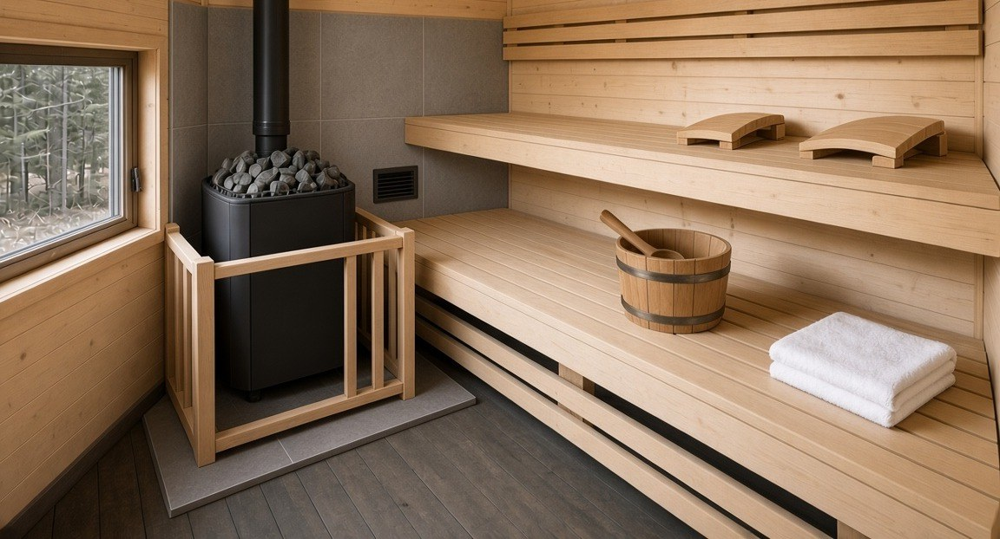
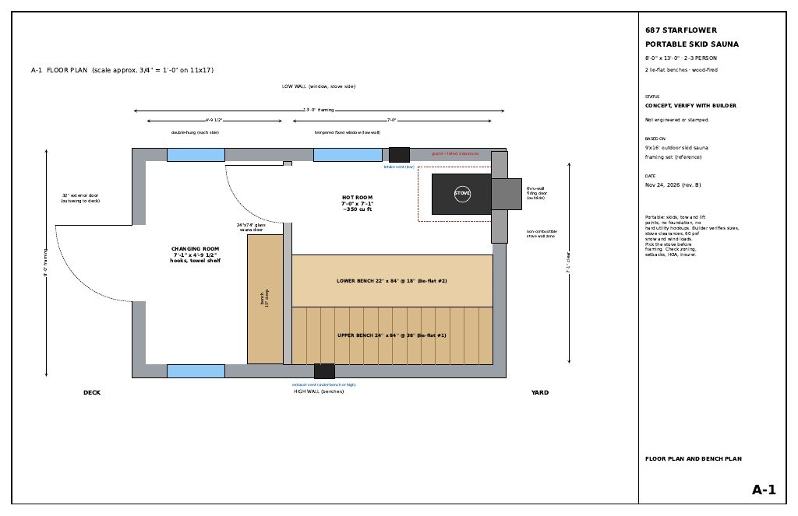
Size and layout
- Footprint: 8′-0″ × 13′-0″ framed (104 sf), roof about 9′-6″ × 14′-0″ with overhangs; about 10 ft tall at the high side.
- Changing room: about 7′-1″ × 4′-9″, with a bench and hooks; a 32 in black half-glass door opens onto the deck.
- Hot room: about 7′-0″ × 7′-1″, for 2–3 people, behind a 24 × 74 in glass sauna door.
- Benches: two full-length benches, wall to wall, 84 in long: an upper bench 24 in deep at 38 in and a lower bench 22 in deep at 18 in. Two people can lie flat at once, one per bench; three sit comfortably.
Stove and fire protection
- A small wood stove, fired through the wall from the yard end, so no ash or wood comes through the changing room.
- Fire-retardant-treated framing and non-combustible cement board around the stove and chimney, with ventilated heat shields, a hearth pad, and the stove maker’s listed clearances.
- 6 in insulated Class-A chimney with a spark arrestor cap, at least 3 ft above the roof and 2 ft above anything within 10 ft.
Portable by design
- Three pressure-treated skids with tow eyes at both ends and four corner lift points; it can be towed or craned out.
- Sits on a level gravel pad with optional removable ground anchors. No foundation, no water, no hard-wired power.
- Placed 13 ft out from the deck at the hot-tub corner, with the flue at the yard end, well away from the house and kept off the septic field.
- Confirm township zoning, HOA and wood-stove rules.
Plans (PDF)
- 687 portable skid sauna, 8×13 plan set: floor plan, elevations, section, framing, bench detail, stove and chimney fire protection, skids and tow points, site placement, and a materials list. Concept, verify with the builder.
- Original 9×16 skid sauna framing set that the 687 plans adapt (reference only).
Trails from the back door
The west lot line borders state forest. An old two-track from the backyard reaches the Vasa Singletrack in about half a mile, and the Sand Lakes Quiet Area, Muncie Lakes and the main Vasa trailhead are each a short drive.

Measurements to take on the next visit
Our furniture (Florida)
- Every sectional piece: length × depth × height, and which pieces unbolt (corner and chaises).
- Cigar chairs, tufted bench, media console, kids desk.
- Massage chair, upright and fully reclined.
- Bed frame and headboard height; the carved mirror panel.
At 687
- Main stair: clear width rail-to-wall, headroom at the bottom, and whether the stair lift stays.
- Garage stair: clear width, bottom landing length, ceiling height there, door clear width.
- Angled family-room door and the bookcase-door opening (clear width).
- Front door and rear French doors, clear width.
- Floor vents and outlets near the piano spot; coax and power on the TV wall.
- Center garage door clear opening (for the Airstream).
- Tape the garage ceiling: wall height in each bay, height at each bay centerline, and the flat center / peak. The drawings say 10 ft walls and about 13′8″ in the center; the exterior ridge is taller.
- Confirm each HD-9XW (110.25 in overall width, 100.25 in posts) in the 10-ft bays, including a ~2 ft shift toward the ridge. Tape the ceiling along those shifted centerlines. Confirm the right-lift front posts and a car on top against the 8-ft door’s overhead tracks. Measure the XT5 with and without roof rails, and the Model Y with and without a rack, against the planned mid-lock drive-unders (about 74 in left, 72 in right).
- Wall Connector cable length once the right lift is placed; confirm it reaches the Model Y driver-rear port from the door-end of the house wall.
- Open the garage ceiling hatch (carefully) and note whether it opens into the shallow garage scissor cavity or reaches the house attic; look for a second access in the house closets; check whether the lid is a 20-minute / self-closing or 5/8″ Type X hatch.
- Stake the 8×13 sauna at the hot-tub corner of the deck, 13 ft out: tape the deck height above grade and the grade for a level gravel skid pad that puts the changing-room floor even with the deck.
- Have a pumper mark the septic tank, drain field and reserve, and keep the sauna and its pad off them.
- Check for trees or anything within 10 ft of the flue at the yard end, and confirm the deck railing opening by the hot tub.
How confident is this?
- Main floor: high. Permit drawings and the listing plan agree.
- Lower level: medium-high. Room sizes are from the listing plan, interior walls ±1 ft.
- Garage: medium. Shell from the drawings, contents from the gym plan. Ceiling height is medium-high at the 10 ft walls, medium at the 13′8″ center until it’s taped.
- Septic areas: low. Approximate, from the permit sketch.
Furnishings Exhibit A
Draft Exhibit A lists the movable personal property proposed for a separate bill of sale, at used-market values, in connection with a purchase of the real estate. The real-estate price is not stated on the exhibit. Televisions, tables, chairs, dressers, desks, and similar hard or functional pieces are included. Couches, the primary-suite bed, décor, and ordinary household contents are excluded. Bedroom 2 and Bedroom 3 beds are listed as conditional, only if they prove like-new at walkthrough. The primary-suite and lower-level family-room TVs are both 80 in., confirmed.
Base used-market point estimate: $7,730 (range $6,180–$10,050). Estimated new-cost range for the base list: $15,450–$31,550. With the conditional Bedroom 2 and 3 frames: $8,330. With frames and mattresses if like-new: $8,780.
Concept planning only, not an appraisal, survey or engineering document. Photos © their listing photographers, used here for private planning reference.